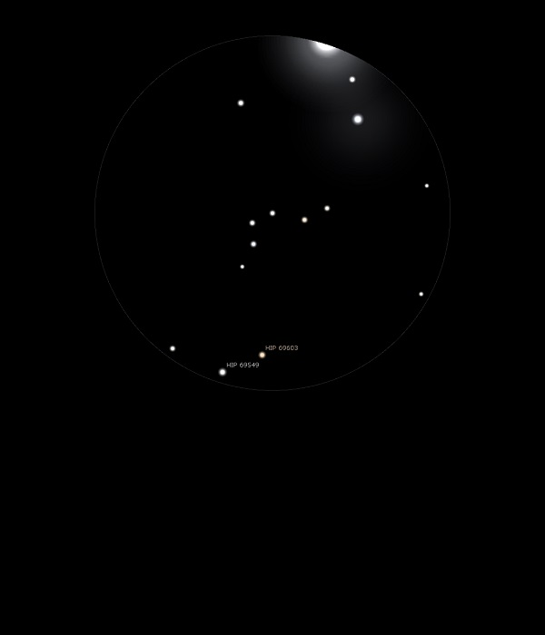

Napoleon's Hat

Asterism of stars in Bootes
12/05/15
A neat asterism of stars in the same 25mm FOV as Arcturus, Alpha Bootis
Appropriate since 18th June sees the 200th anniversary of the Battle of Waterloo